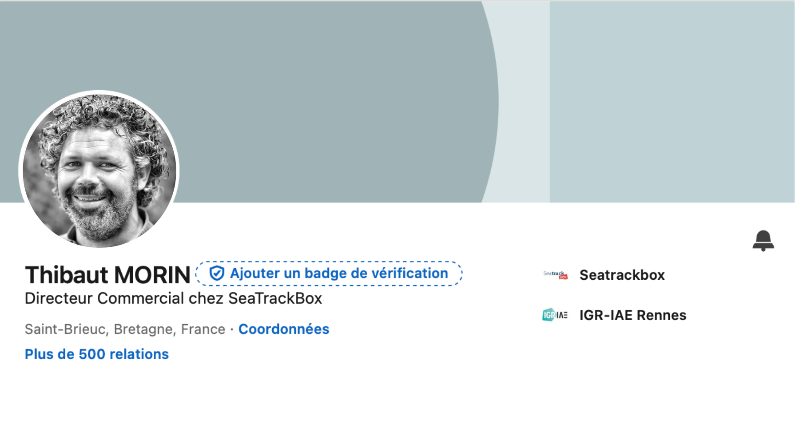

LinkedIn Optimization.
L'Objectif
Optimiser le profil LinkedIn de Thibaut Morin, directeur commercial chez SeaTrackbox, pour le rendre plus engageant, cohérent avec l’identité de l’entreprise et reflétant l’esprit start-up.
Performance
Relations
1300 → 0
Abonnés
1000 → 0
Analyse
Harmonie Visuelle
J’ai intégré les éléments de la charte graphique dans la bannière afin de renforcer la cohérence visuelle. Le profil n'est plus un simple CV, mais une extension directe de la marque SeaTrackbox.
Ton & Positionnement
Adoption d’un ton plus dynamique et accessible dans la description afin de refléter l’esprit start-up. L'usage d'un hashtag de marque renforce la visibilité et l'appartenance.
Levier de Conversion
Chaque section a été SEO-optimisée pour que Thibaut Morin remonte sur les requêtes stratégiques du secteur maritime, transformant son profil en un véritable aimant à leads.
